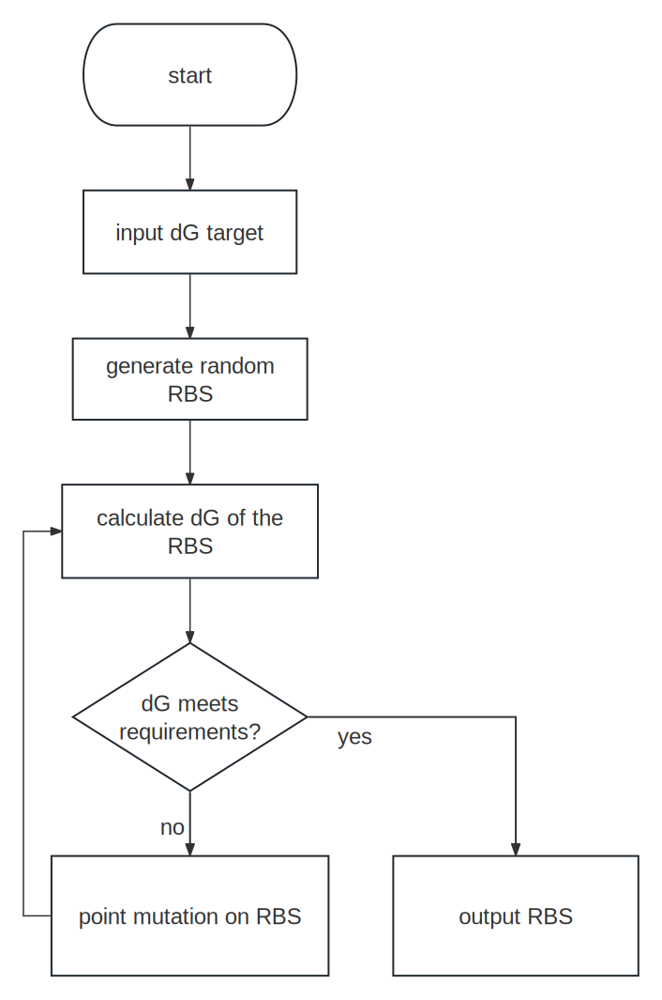

RAP Builder
Introduction
In synthetic biology, multipart reactions of exogenous import often present a conflict between reaction efficiency and problems such as excessive metabolic stress and metabolic stress in cells. If too low an amount of an enzyme is expressed in a multi-step reaction, the rate-limiting step will result in an inefficient reaction, but if too high an enzyme is expressed in a multi-part reaction, it will result in increased metabolic pressure on the cell due to excessive consumption of the carbon source as well as metabolic stress due to the buildup of the substrate. Therefore a suitably tunable multigene co-expression system is necessary.
pRAP system
There are two ways to implement multigene co-expression system,which are the multi-promoter co-expression strategy and the polycistronic co-expression strategy. Compared to the multi-promoter co-expression strategy, the polycistronic co-expression strategy is more suitable for synthetic biology because it requires minimal cargo DNA to deliver multiple genes and all genes complete their expression under one promoter1. Polycistronic expression also offers reproducible ratios of the proteins expressed, minimizing the impact on protein expression of the fluctuating transcription associated with multiple promoters because all genes are transcriptionally linked2. However, a major problem with polycistronic expression, which has two or more target genes under one promoter, is that the downstream genes express significantly lower than the first gene next to the promoter3,4.
To solve this problem, our team proposed the Ribozyme-Assisted Polycistronic co-expression system (pRAP system) last year and won the 2022 Best New Basic Part. We develop pRAP system by sandwiching ribozyme sequences between CDSs instead of sequentially building CDSs. In pRAP, the hammerhead ribozyme's RNA sequences execute self-cleaving, leading in the co-transcriptional conversion of the polycistronic mRNA transcript into separate mono-cistrons in vivo.
Establishing RBS strength
Even though we discovered and demonstrated the pRAP system's functionality last year, we were only able to measure whether or not the RBS intensity needed to be increased or decreased. This year, we proposed a method for quantitatively evaluating optimal RBS intensity. Our method focuses on the balanced state of cellular metabolism and is based on the following assumptions:
Assumption 1
The fluxes are balanced between each step of the linear reaction and can be expressed as follows:
where \(n\) is the index of the reaction and \(flux\) means flux of the reaction. The significance of this assumption is that it prevents metabolic stress caused by flux imbalance and permits the cell to be in a state of flux balance.
Assumption 2
The substrate should not be overstacked and should be kept more stationary, which we denote here as follows:
where \([S_n]\) represents the concentration of the substrate of \(reaction_n\) and \(k_{m,n}\) represents the \(k_m\) value of reaction \(n\).
From the Michaelis-Menten equation we could find:
Where \(c_n\) is the concentration of the enzyme of \(reaction_n\) and \(k_{cat,n},v_n\) is the \(k_{cat}\) and velocity value of \(reaction_n\).
and
where \(A_n\) is the ratio of product to substrate stoichiometry.
Combining these equations and Assumption 1 we can conclude:
From KineticHub we can easily search for \(k_{cat}\). By obtaining the \(A_n\) as well as the \(k_{cat}\) for each step in the linear reaction, we know what the ratio of concentration between the enzymes in each step is.
Note
It is important to note that the purpose of regulating RBS strength here is to regulate the relative proportional coordination between exogenously imported reactions, and the regulation of the absolute strength of the linear reaction coupled to intracellular metabolism is controlled by the induction intensity.
Assumption 3
The pRAP system introduces a stem-loop to avoid degradation of RNA after self-cleaving so the rate of RNA degradation is significantly reduced.5 And the protein concentration in the cell can be expressed as follows6:
where \(\alpha_{p,n}\) is the translation initiation rate of \(reaction_n\), \(\delta_n\) is the mRNA degradation rate of \(reaction_n\), \(\alpha_{m,i}\) is the transcription initiation rate of \(reaction_n\), \([G_n]\) is the gene concentration of \(reaction_n\), \(\lambda\) is the growth rate of the cell. Since the enzymes under pRAP system are all expressed under the same promoter, the gene concentration and transcription initiation rate are the same between reactions:
And since the mRNA degradation rate in the presence of the stem-loop were all low, we concluded that there was little difference in the rates of RNA degradation between the reactions:
Based on this assumption, we can notice:
By calculating the transcription initiation rate we can get the RBS intensity of the optimal.
Finding RBS with optimal intensity
After getting the optimal RBS intensity, we need to get a synthetic RBS of that intensity (TIR rate). We used a thermodynamic approach combined with a Monte Carlo algorithm to obtain the optimal RBS7,8.
Transcription initiation rate can be expressed in terms of the Gibbs free energy change of transcription7:
where \(K\) and \(\beta\) is a constant can be established experimentally, \(\Delta G_{total,n}\) represents the Gibbs free energy change of \(reaction_n\). \(\Delta G_{total,n}\) could be expressed by the following equation:
The \(\Delta G_{mRNA:rRNA,n}\), \(\Delta G_{spacing,n}\), \(\Delta G_{standby,n}\), \(\Delta G_{mRNA,n}\) in this equation is calculated by ViennaRNA9. For a defined start codon, \(\Delta G_{start,n}\) is identified.
We use an Monte Carlo algorithm to find optimal RBS. The schematic of the algorithm is shown below:

References
-
Renaud-Gabardos, E., Hantelys, F., Morfoisse, F., Chaufour, X., Garmy-Susini, B., & Prats, A.-C. (2015). Internal ribosome entry site-based vectors for combined gene therapy. World Journal of Experimental Medicine, 5(1), 11–20. https://doi.org/10.5493/wjem.v5.i1.11 ↩
-
Sokolenko, S., George, S., Wagner, A., Tuladhar, A., Andrich, J. M. S., & Aucoin, M. G. (2012). Co-expression vs. co-infection using baculovirus expression vectors in insect cell culture: Benefits and drawbacks. Biotechnology Advances, 30(3), 766–781. https://doi.org/10.1016/j.biotechadv.2012.01.009 ↩
-
Qi, L., Haurwitz, R. E., Shao, W., Doudna, J. A., & Arkin, A. P. (2012). RNA processing enables predictable programming of gene expression. Nature Biotechnology, 30(10), Article 10. https://doi.org/10.1038/nbt.2355 ↩
-
Kim, K.-J., Kim, H.-E., Lee, K.-H., Han, W., Yi, M.-J., Jeong, J., & Oh, B.-H. (2004). Two-promoter vector is highly efficient for overproduction of protein complexes. Protein Science: A Publication of the Protein Society, 13(6), 1698–1703. https://doi.org/10.1110/ps.04644504 ↩
-
Liu, Y., Wu, Z., Wu, D., Gao, N., & Lin, J. (2023). Reconstitution of Multi-Protein Complexes through Ribozyme-Assisted Polycistronic Co-Expression. ACS Synthetic Biology, 12(1), 136–143. https://doi.org/10.1021/acssynbio.2c00416 ↩
-
Balakrishnan, R., Mori, M., Segota, I., Zhang, Z., Aebersold, R., Ludwig, C., & Hwa, T. (2022). Principles of gene regulation quantitatively connect DNA to RNA and proteins in bacteria. Science (New York, N.Y.), 378(6624), eabk2066. ↩
-
Salis, H. M., Mirsky, E. A., & Voigt, C. A. (2009). Automated design of synthetic ribosome binding sites to control protein expression. Nature Biotechnology, 27(10), Article 10. https://doi.org/10.1038/nbt.1568 ↩↩
-
Salis, H. (2023). Hsalis/Ribosome-Binding-Site-Calculator-v1.0 [Python]. https://github.com/hsalis/Ribosome-Binding-Site-Calculator-v1.0 (Original work published 2009) ↩
-
Lorenz, R., Bernhart, S. H., Höner zu Siederdissen, C., Tafer, H., Flamm, C., Stadler, P. F., & Hofacker, I. L. (2011). ViennaRNA Package 2.0. Algorithms for Molecular Biology, 6(1), 26. https://doi.org/10.1186/1748-7188-6-26 ↩